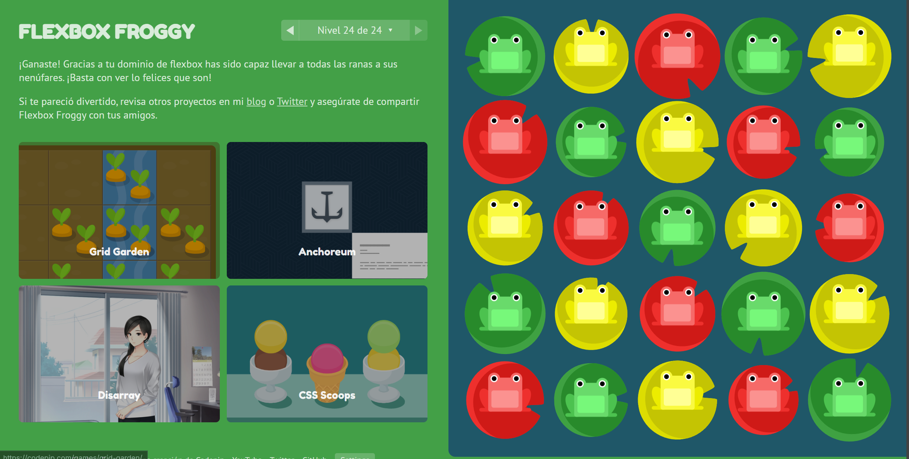

Html is the skeleton of the sites in the web.
The body part is what you see on screen and there can only be one body in the website, its like humans, we can only have one body
The head part is something that we cant read, only computers
Section: The section part in html its more like a a part of your body, so in real life is more like only using the part of your chest or legs
Article: its just a self piece of content. The difference between article and section its something that groups between a theme
Aside: Its just information not an important as the main part
Header: Its for the titles
Footer: Its for the closing part
| Nombre | Lista Ordenada | Lista Desordenada |
|---|---|---|
| Andres |
|
|
Its a lenguaje to give accessories, its more like using makeup
Its to separate the sheet of content and the information page
Option 1: its inside the HTML page more like this p style = color: blue inside the html tag
Option 2: Inside style in head style p { color:blue} style
Option 3: External .css file : link rel=stylesheet href = link.css
A selector its something that you give to a tag, so it can always have that in css and inside them you give them the rules
A tag selector its the same as using p{}
An class selector its when you create a class and then in the .css file you put .class{}
An tag + class its something like this p.class{} with this you can have more style in your css
An id selector its like this #ID{}
A class its something you can give to a lot of tags and even different type of tags
An id its something unique to a unique tag
This are various elements that can help how the space of an element acomodates
Padding: its the internal space
Border: as the name its the border
Margin: external space
It can help change the size dependig the screen of the device
Game FlexboxFroogy:
HTML: Lenguaje de etiquetas de hipertexto | MDN. (2025, 20 junio). https://developer.mozilla.org/es/docs/Web/HTML
El elemento body del documento - HTML: Lenguaje de etiquetas de hipertexto | MDN. (2025, June 21). https://developer.mozilla.org/es/docs/Web/HTML/Reference/Elements/body
El elemento de metadatos del documento (encabezado) - HTML | MDN. (n.d.). https://developer-mozilla-org.translate.goog/en-US/docs/Web/HTML/Reference/Elements/head?_x_tr_sl=en&_x_tr_tl=es&_x_tr_hl=es&_x_tr_pto=tc
El elemento de sección genérica - HTML: Lenguaje de etiquetas de hipertexto | MDN. (2025, June 21). https://developer.mozilla.org/es/docs/Web/HTML/Reference/Elements/section
El elemento con contendio del artículo - HTML: Lenguaje de etiquetas de hipertexto | MDN. (2025, June 21). https://developer.mozilla.org/es/docs/Web/HTML/Reference/Elements/article
aside - HTML: Lenguaje de etiquetas de hipertexto | MDN. (2025, June 21). https://developer.mozilla.org/es/docs/Web/HTML/Reference/Elements/aside
header - HTML: Lenguaje de etiquetas de hipertexto | MDN. (2025, June 20). https://developer.mozilla.org/es/docs/Web/HTML/Reference/Elements/header
footer - HTML: Lenguaje de etiquetas de hipertexto | MDN. (2025, June 20). https://developer.mozilla.org/es/docs/Web/HTML/Reference/Elements/footer
BlackeyeB. (2023, March 25). Lista HTML: Cómo usar viñetas, listas ordenadas y desordenadas. freeCodeCamp.org. https://www.freecodecamp.org/espanol/news/lista-html-como-usar-vinetas-listas-ordenadas-y-desordenadas/
tabla - HTML: Lenguaje de etiquetas de hipertexto | MDN. (2025, June 24). https://developer.mozilla.org/es/docs/Web/HTML/Reference/Elements/table
W3Schools.com. (n.d.). https://www.w3schools.com/css/css_selectors.asp